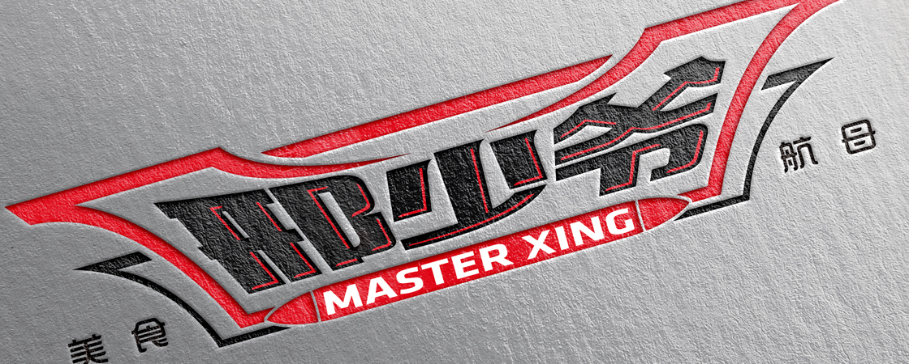

邢少爷是一家主打各地特色爆款美食的餐饮O2O品牌，致力于打造自有品牌+入驻品牌的餐饮O2O平台。目前主要以秦镇米皮、老潼关为核心，做特色美食。雅聪（上海）餐饮管理有限公司旗下品牌。
邢少爷的产品主要是“凉皮(米皮)+肉夹馍”的套餐。不管是不是互联网餐饮，不管是不是有炒作的噱头，只要用心做产品，不管是一个肉夹馍，还是一盅佛跳墙，能拿到融资都是好事儿，可以来更快地来发展，我们都祝福。
肉夹馍是陕西小吃，而且种类多样，有使用白吉馍的“腊汁肉夹馍”、宝鸡西府的肉臊子夹馍、潼关的潼关肉夹馍。此次融资主要用于肉夹馍材质和用户体验的整体提升。肉夹馍有极久远的历史渊源，相传在秦朝，肉夹馍已经诞生，并且逐渐细分，产生了如上的几个分支。但这么多种肉夹馍，每一个种类都有很多固定吃货群体。高端大店一步步没落，一些地方小吃倒是成为了主流，很多重庆小吃店也走了小而美路线开进了商场里，客单价不高，但能吃到好几个品类，颇受消费者欢迎。
还有一种，就是像黄焖鸡米饭和肉夹馍这种的，打造单品爆款。往前数，有兰州拉面这样的前辈，这几年，有重庆小面和万州烤鱼这样的新锐。
小吃流行自然有其原因，制作简单，速度快，价格亲民，比较适合大众的消费市场。然而，简单总是伴随着门槛低、易模仿等字眼，一窝蜂的一拥而上，极容易将辛苦做起来的品牌淹没其中。
当一家店进入市场时，他可以赚到钱;但当100家店同时进入，市场会供过于求。第一个吃螃蟹的人可能吃到了蟹黄，后面的人可能就只能闻见螃蟹香了。
还应该感谢西少爷的是，创业者即使做地方小吃，也有了品牌意识，并做起了标准化，这都是一个餐饮品牌发展的基础。